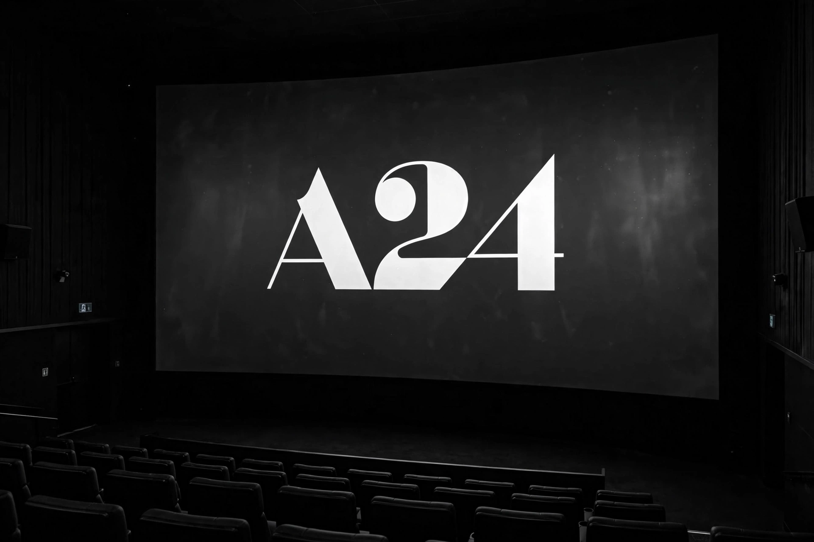

A24

| Founded | 2012 |
|---|---|
| Founders | Daniel Katz, David Fenkel, John Hodges |
| Headquarters | New York City, United States |
| Industry | Entertainment |
| Products | Films, television programmes |
A24 is an American independent entertainment company based in Manhattan, New York City, that specialises in film and television production and film distribution. It was founded in 2012 by Daniel Katz, David Fenkel and John Hodges; its name comes from the Italian motorway on which Katz was driving when he decided to found the company.
Film
A24's first film was Charles Swan III (2013), and it broke through with Spring Breakers, The Bling Ring and The Spectacular Now. It became known for director-driven genre and arthouse films including Ex Machina, Room, The Witch, Lady Bird, Eighth Grade, Hereditary, Uncut Gems and Minari.
At the 89th Academy Awards in 2017, Moonlight won Best Picture, making A24 the first independent studio to win in the category with a wholly self-distributed film. In 2023, Everything Everywhere All at Once won seven Academy Awards including Best Picture, and A24's The Whale also won two, making A24 the first studio to sweep all major Oscar categories in a single year.
Television and brand
The company's television arm has produced or distributed series including Euphoria, Beef, Irma Vep and The Sympathizer. A24 is recognised for minimalist social-media marketing, limited merchandise drops and podcasts, which have built it an unusually strong brand identity among younger film audiences. Private-equity investment in 2022 valued the company at over $2.5 billion.
See also: Moonlight (2016 film) · Everything Everywhere All at Once